library(readr)
library(dplyr)
library(ggplot2)
library(tidyr)
library(stringr)
library(scales)
library(mnormt) # for multivariate normal
library(LaplacesDemon) # for logistic transform
invisible(lapply(list.files(here::here("R"), full.names = TRUE), source)) # load functions
#' read cleaned data from 'take 2' approach
vax_clean <- readr::read_csv(here::here("data", "measles_vax-coverage-data-clean2.csv"), show_col_types = FALSE) %>% filter(!(pt %in% c("SK","YT","NB"))) #%>% filter(location %in% unique(pt_lookup()$location)) # filtering out sub-provinces etc estimates
vax_schedule <- readr::read_csv(here::here("data", "measles_raw", "vax_schedule.csv"), show_col_types = FALSE)
popsize <- readr::read_csv(here::here("data", "popsize.csv"), show_col_types = FALSE)
current_year <- as.integer(format(Sys.Date(), "%Y")) # for ageing estimates
age_pre1970 <- current_year - 1969 # min age of those born strictly before 1970Full Gaussian Process model for estimating vaccine coverage
Set Up
Load functions and packages. Read the standardized cleaned data from the ‘take 2’ preliminary modelling approach (aiming to collapse different dose estimates to 1+). The data set vax_clean contains province-level estimates. We aim to work with current age (effectively collapsing year_birth and age dimensions into one).
A note on scales
Model fitting is done using Gaussian distributions, whose domain is the entire real line. However, the vaccine coverage data is restricted to \([0,1]\) (though in practice, they’re not on the boundaries of this interval). Thus, we transform the vaccine coverage data using a logit function to map it from \((0,1)\) to \((-\infty, \infty)\), perform the model fitting on the real line, and then transform the predictions back from \((-\infty, \infty)\) to \((0,1)\).
1D case (current age)
The 1D model can be run for any single province, e.g. Alberta.
vax_prov <- vax_clean %>% filter(pt=="AB") #%>% filter(n_doses!="2")Define covariance function / covariance matrix
Use the squared exponential covariance function, k, to begin with and assume lengthscale l=2. Our dataset has 40 inputs/ independent variables (current age), so our covariance matrix is a 40x40 matrix defining the ‘relationships’ between each pair of current ages.
ksqexp <- function(r,l,b=1) { # this is also defined in ksqexp.R
b*exp(-r^2 / (2*l^2))
}
first_agecurrent <- 1 # first age for the GP model
last_agecurrent <- 32 #age_pre1970-1 # last age for the GP model
xvals <- first_agecurrent:last_agecurrent # a vector of current ages (these x_i's are equally spaced)
npts <- length(xvals)
l <- 2
#' evaluate cov function pairwise for current ages x1_i and x2_i (i=1,..,n)
covmat <- expand_grid(x1=xvals,x2=xvals) %>% mutate(k=ksqexp(abs(x1-x2),l)) %>%
pull(k) %>% matrix(nrow=npts) # could also use function generate_ksqexp_covmat() hereDefine prior distribution (N(0,cov)) and draw a sample
Define a prior ~ Normal(0,cov). This prior describes the relationship between vaccination coverage and current age. It is uniquely defined with mean 0 and variance equal to our covariance matrix. Take 50 draws from the prior and plot. x_i is the vector of inputs (current ages). Vertical axis is vaccination coverage.
prior <- tibble()
for(i in 1:50) {
prior <- bind_rows(prior, tibble(draw=i, x_i=xvals, prior=rmnorm(1, rep(0,npts), covmat+1e-6*diag(npts)))) # each rmnorm is a random draw from the (multivariate) prior
}
prior %>% group_by(draw) %>% ggplot(aes(x=x_i,y=prior,group=factor(draw))) + scale_x_continuous(breaks=xvals,name="current age x_i") + geom_point(alpha=0.3) + geom_line(alpha=0.2)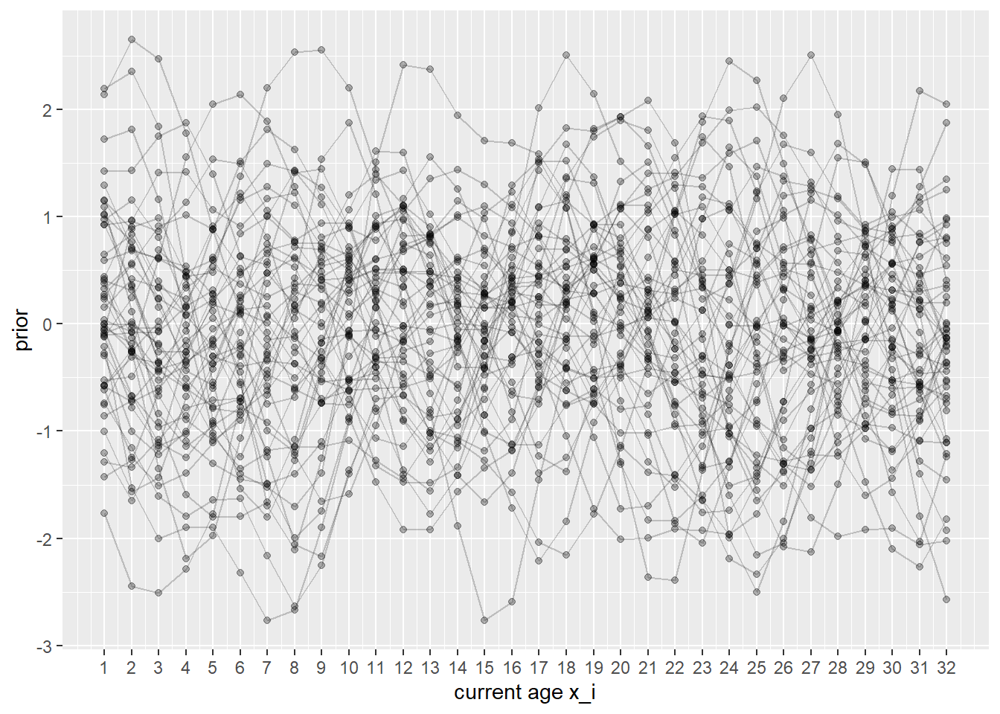
Introduce observed data
For this mini dataset vax_prov, we have a dataset of n data points. First expose the model to ~8 data points (to see how well it can predict the remainder). We will use the logistic transform of y (logit(yobs)) which maps from [0,1] to [-inf,inf].
#' observe coverage data for age 4, 9, 13, 19, 20, 21, 25, 30
xobs <- vax_prov %>% filter(age_current %in% c(4,9,13,19,20,21,25,30)) %>% pull(age_current) # can optionally add an error term here
yobs <- vax_prov %>% filter(age_current %in% c(4,9,13,19,20,21,25,30)) %>% pull(value)
# xobs <- vax_prov %>% pull(age_current) # can optionally add an error term here
# yobs <- vax_prov %>% pull(value)
tibble(xobs, yobs, logit(yobs))# A tibble: 8 × 3
xobs yobs `logit(yobs)`
<dbl> <dbl> <dbl>
1 4 0.817 1.49
2 9 0.726 0.976
3 13 0.817 1.50
4 19 0.973 3.57
5 20 0.978 3.81
6 21 0.978 3.81
7 25 0.969 3.46
8 30 0.893 2.12 Compute posterior distribution
The posterior is uniquely defined by its posterior mean and posterior covariance matrix. First, calculate individual covariance matrices to determine the pairwise ‘relationships’ between unobserved current ages xvals and observed current ages xobs. Then calculate the posterior covariance matrix as kuu - kuo%*%solve(koo)%*%kou.
kuo <- generate_ksqexp_covmat(xvals,xobs,fn=ksqexp,l=l) # 'relationship' pairwise between unobserved and observed ages
kou <- generate_ksqexp_covmat(xobs,xvals,fn=ksqexp,l=l) # 'relationship' pairwise between observed and unobserved ages
koo <- generate_ksqexp_covmat(xobs,xobs,fn=ksqexp,l=l) + 1e-6*diag(length(xobs)) # protect against non-invertibleness
kuu <- generate_ksqexp_covmat(xvals,xvals,fn=ksqexp,l=l)
#' calcuate posterior mean and posterior cov matrix
post_mean <- kuo%*%solve(koo)%*%(logit(yobs)) # conditional mean
post_covmat <- kuu - (kuo%*%solve(koo)%*%kou) # conditional variancePlot posterior against the data
Take 50 draws from the posterior and plot against the observed logit-transformed data. The posterior function can be used to provide estimates of our missing coverage data if inverse-transformed back to a [0,1] interval (second plot).
post <- tibble()
for(i in 1:50) { # take 50 posterior draws
post <- bind_rows(post, tibble(draw=i, x_i=xvals, post=rmnorm(1, post_mean, post_covmat + 1e-6*diag(nrow(post_covmat))))) # each rmnorm is a random draw from the (multivariate) posterior
}
post <- post %>% mutate(post_constrained=invlogit(post)) # add column to transform back to [0,1] interval
post %>% ggplot() + geom_point(aes(x=x_i,y=post,group=factor(draw)), alpha=0.3) + scale_x_continuous(breaks=xvals,name="current age x_i") + geom_line(aes(x=x_i,y=post,group=factor(draw)), alpha=0.2) + geom_point(data=tibble(x=xobs, y=logit(yobs)), aes(x=x,y=y), col="red")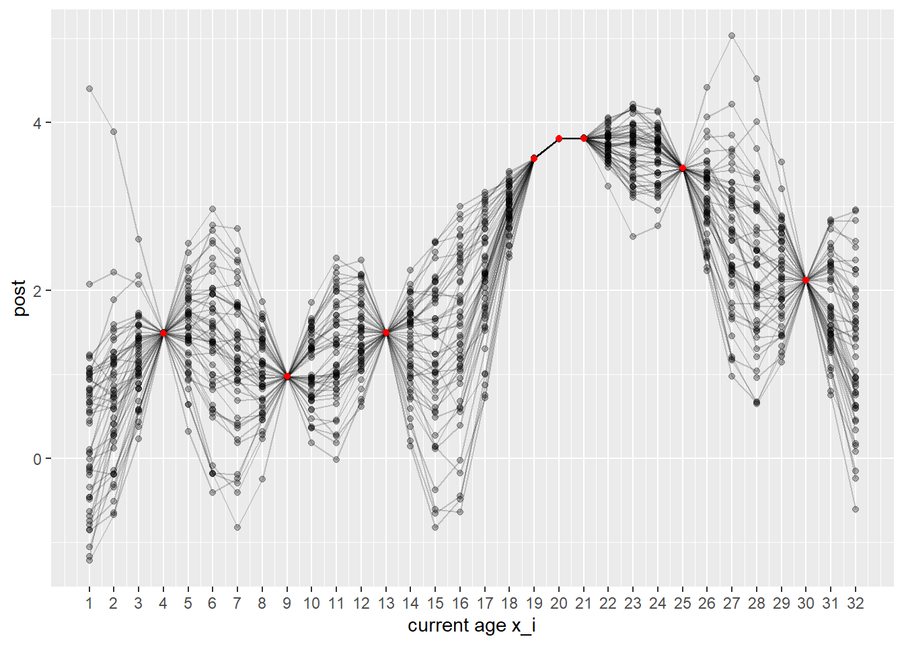
post %>% ggplot() + geom_point(aes(x=x_i,y=post_constrained,group=factor(draw)), alpha=0.3) + scale_x_continuous(breaks=xvals,name="current age x_i") + scale_y_continuous(limits=c(0,1)) + geom_line(aes(x=x_i,y=post_constrained,group=factor(draw)), alpha=0.2) + geom_point(data=tibble(x=xobs, y=yobs), aes(x=x,y=y), col="red")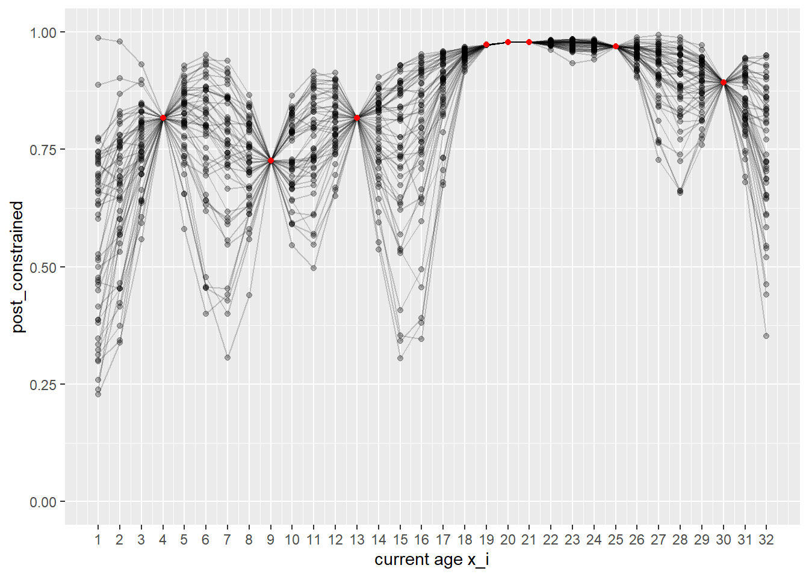
We can add in the remaining true data (which the model has not seen) to evaluate its performance. The true coverage values are marked as red (seen) and green (not seen) points.
post %>% ggplot() + geom_point(aes(x=x_i,y=post_constrained,group=factor(draw)), alpha=0.3) + scale_x_continuous(name="current age x_i", breaks=xvals) + scale_y_continuous(limits=c(0,1)) + geom_line(aes(x=x_i,y=post_constrained,group=factor(draw)), alpha=0.2) + geom_point(data=tibble(x=(vax_prov %>% filter(age_current <= last_agecurrent) %>% pull(age_current)), y=(vax_prov %>% filter(age_current <= last_agecurrent) %>% pull(value))), aes(x=x,y=y), col="green") + geom_point(data=tibble(x=xobs, y=yobs), aes(x=x,y=y), col="red")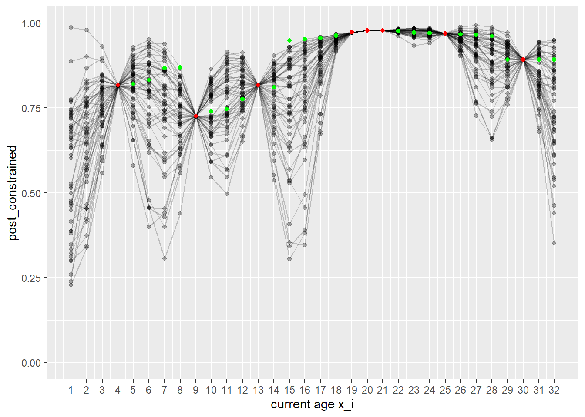
#ggsave(paste0("plots/ABpost_l",l,"_ksqexp",".pdf"), height=4.51, width=7.29)Extensions
To improve this model, the next step would be to experiment with choice of covariance function k and lengthscale l, and to add in province as a second dimension. It is also worth considering how to treat dose data - currently the model struggles with data points for 2 dose. It may be worth fitting two fairly separate GPs (1+ and 2 dose), or using the 2 dose estimates as minimums for the prior in some way.
2D case (current age and province)
The 2D model adds province as a second dimension (only prior and observed data shown do far). In this model, x_i is current age, y_i is province, and vertical axis (z_i) is always estimated vaccine coverage. Note: more information is needed to inform relationship between provinces.
Covariance and prior
We use the squared exponential covariance function to begin with, with current age lengthscale, l1, and relative lengthscale of current age to province, l2. If the squared exponential is too strong an assumption, we can also increase its variance (i.e. the model uncertainty) with parameter b. Relation of provinces currently uses GDP from StatCan (https://www150.statcan.gc.ca/t1/tbl1/en/tv.action?pid=3610040201) – this should be updated when a better method is found. Define the prior ~ Normal(0,cov) as before and draw a sample.
Note that we currently assume a mean of 0. We could specify a non-zero mean here in the prior, or equivalently, we could centre the observed data to mean 0, run the Gaussian Process as normal and then rescale the data back at the end. We will do the latter as it simplifies calculation.
#' setup
#' now both x and y are inputs, with output z
first_agecurrent <- 1 # first age for the GP model
last_agecurrent <- 32 #age_pre1970-1 # last age for the GP model
xvals <- first_agecurrent:last_agecurrent # a vector of current ages (these x_i's are equally spaced)
province_relation <- readr::read_csv(here::here("data", "3610040201-noSymbol.csv"), show_col_types = F) %>%
filter(location %in% unique(vax_clean$location)) # province GDP data from StatCan
yvals <- log(province_relation %>% pull(Dollars)) # a vector of provinces -- currently log(GDP)
names(yvals) <- province_relation %>% pull(location)
npts <- length(xvals)*length(yvals)
l1 <- 1.5 # x lengthscale
l2 <- 3 # relative lengthscale of x values to y values
yvals <- yvals*l2 # scale y values to the x lengthscale
#' covariance matrix in 2D
b <- 0.75 # optional function scale for ksqexp determining output variance
covmat <- expand_grid(x1=xvals, y1=yvals, x2=xvals, y2=yvals) %>% mutate(k=ksqexp(sqrt((x1-x2)^2 + (y1-y2)^2), l1, b=b)) %>%
pull(k) %>% matrix(nrow=npts)
#' define prior and take 50 draws
xygrid <- expand_grid(x=xvals, y=yvals)
prior2D <- tibble()
for(i in 1:50){ # 50 realisations from a 2D gaussian process, with both x, y as independent variables
prior2D <- bind_rows(prior2D, tibble(draw=i, x_i=xygrid$x, y_i=xygrid$y, prior2D=rmnorm(1, rep(0,npts), covmat + 1e-6*diag(npts))))
}
#' plot prior sample
prov_levels <- (province_relation %>% pull(location)) # useful shortcut for defining province factors
prior2D <- prior2D %>% mutate(y_label = names(yvals)[match(y_i, yvals)]) %>%
mutate(y_label = factor(y_label, levels=prov_levels))
prior2D %>% ggplot(aes(x=x_i, y=prior2D, group=factor(draw))) + scale_x_continuous(breaks=xvals,name="current age x_i") +
geom_line(alpha=0.3) + facet_wrap(~ y_label)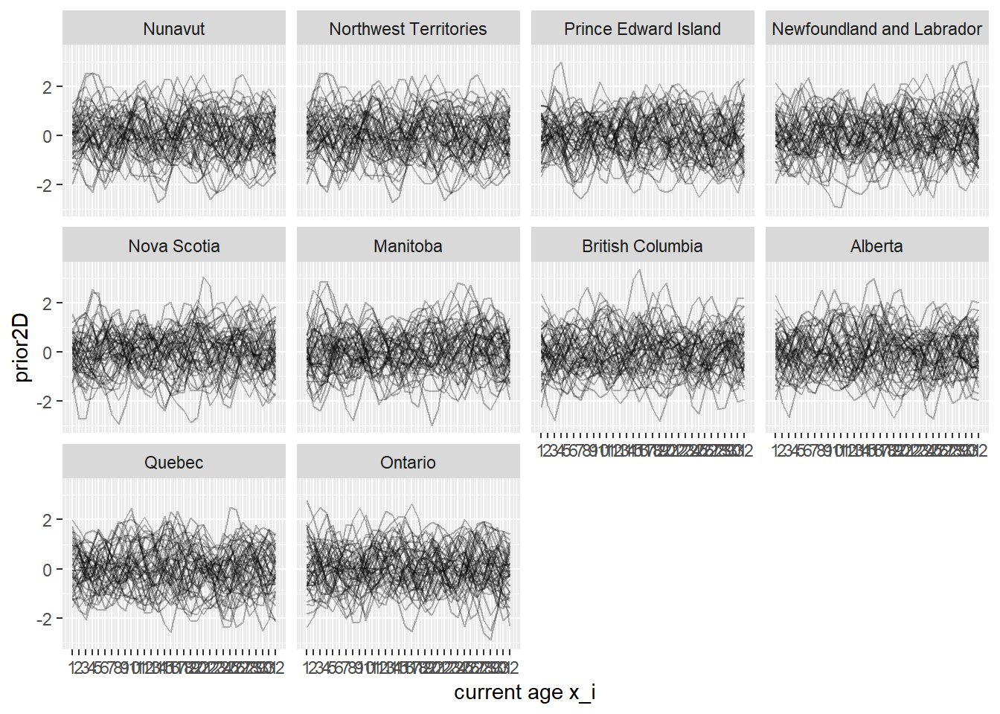
Observed data
Expose the model to ~50 data points (to see how well it can predict the remainder). Exclude 2-dose data. We will use the logistic transform of z (logit(zobs)) which maps from [0,1] to [-inf,inf]. Our GP uses a prior mean of 0 so we centre the data around 0 after transforming.
To expose the model to the full vaccine coverage dataset, uncomment the three commented lines below.
#' observe coverage data for age 4, 9, 13, 19, 20, 21, 25, 30 in all provinces where data exists
xobs <- vax_clean %>% filter((age_current %in% c(4,9,13,19,20,21,25,30)) & n_doses!="2") %>% pull(age_current) # can optionally add error term here
yobs <- yvals[vax_clean %>% filter((age_current %in% c(4,9,13,19,20,21,25,30)) & n_doses!="2") %>% pull(location)] # Alberta==25.5 etc as in yvals (log(GDP)) **already scaled by l2
zobs <- vax_clean %>% filter((age_current %in% c(4,9,13,19,20,21,25,30)) & n_doses!="2") %>% pull(value)
#' alternatively uncomment to observe all available data (excluding 2-dose)
xobs <- vax_clean %>% filter(age_current<=last_agecurrent) %>% filter(n_doses!="2") %>% pull(age_current)
yobs <- yvals[vax_clean %>% filter(age_current<=last_agecurrent) %>% filter(n_doses!="2") %>% pull(location)]
zobs <- vax_clean %>% filter(age_current<=last_agecurrent) %>% filter(n_doses!="2") %>% pull(value)
#' apply logistic transform and then centre the data around mean 0
logit_zobs_centred <- logit(zobs) - mean(logit(zobs))
tibble(xobs, yobs, zobs, logit_zobs_centred)# A tibble: 157 × 4
xobs yobs zobs logit_zobs_centred
<dbl> <dbl> <dbl> <dbl>
1 4 38.3 0.817 -0.509
2 5 38.3 0.821 -0.482
3 6 38.3 0.832 -0.404
4 7 38.3 0.866 -0.133
5 8 38.3 0.870 -0.106
6 15 38.3 0.950 0.930
7 16 38.3 0.952 0.995
8 17 38.3 0.956 1.08
9 18 38.3 0.963 1.26
10 19 38.3 0.973 1.57
# ℹ 147 more rowsPosterior
As in the 1D case, the posterior is uniquely defined by its posterior mean and posterior covariance matrix. First, calculate individual covariance matrices to determine the pairwise ‘relationships’ between unobserved independent variables {xvals, yvals} and observed independent variables (xobs, yobs). Then calculate the posterior covariance matrix as kuu - kuo%*%solve(koo)%*%kou. In the 1D case, our unobserved was xvals, now it is the concatenated vector grid {xvals, yvals} of size 320x320 (32 ages in each of 10 provinces).
Plot a sample of posterior curves against the observed data (red points).
xygrid <- expand_grid(x=xvals, y=yvals)
xyobs <- tibble(x=xobs,y=yobs)
kuo <- generate_2Dksqexp_covmat(xygrid,xyobs,fn=ksqexp,l=l1,b=b) # 'relationship' pairwise between unobserved and observed
kou <- generate_2Dksqexp_covmat(xyobs,xygrid,fn=ksqexp,l=l1,b=b) # 'relationship' pairwise between observed and unobserved
koo <- generate_2Dksqexp_covmat(xyobs,xyobs,fn=ksqexp,l=l1,b=b) + 1e-6*diag(nrow(xyobs)) # protect against non-invertibleness
kuu <- generate_2Dksqexp_covmat(xygrid,xygrid,fn=ksqexp,l=l1,b=b)
#' calculate posterior mean and posterior cov matrix
post_mean <- kuo%*%solve(koo)%*%(logit_zobs_centred) # conditional mean
post_covmat <- kuu - (kuo%*%solve(koo)%*%kou) # conditional variance#' draw from the posterior distribution and record in dataframe post2D
post2D <- tibble()
for(i in 1:10) { # take 50 posterior draws
post2D <- bind_rows(post2D, tibble(draw=i, x_i=xygrid$x, y_i=xygrid$y, post2D=rmnorm(1, post_mean, post_covmat + 1e-6*diag(nrow(post_covmat))))) # each rmnorm is a random draw from the (multivariate) posterior
}
post2D <- post2D %>% mutate(post2D_constrained=invlogit(post2D + mean(logit(zobs)))) %>% # add column to return mean and transform back to [0,1]
mutate(y_label = names(yvals)[match(y_i, yvals)]) %>% # add column to return province names
mutate(y_label = factor(y_label, levels=(province_relation %>% pull(location)))) %>% # order provinces
select(draw, x_i, y_i, y_label, post2D, post2D_constrained) # reorder columns
#' plot posterior sample
yobs_factors <- factor(names(yobs), levels(post2D$y_label)) # convert yobs to factors for use in facet_wrap
post2D %>% ggplot() + geom_point(aes(x=x_i, y=post2D, group=factor(draw)), alpha=0.1) +
geom_line(aes(x=x_i, y=post2D, group=factor(draw)), alpha=0.2) +
geom_point(data=tibble(x=xobs, y=logit_zobs_centred, y_label=yobs_factors), aes(x=x, y=y), col="red") +
scale_x_continuous(breaks=xvals, name="current age x_i") +
facet_wrap(~ y_label)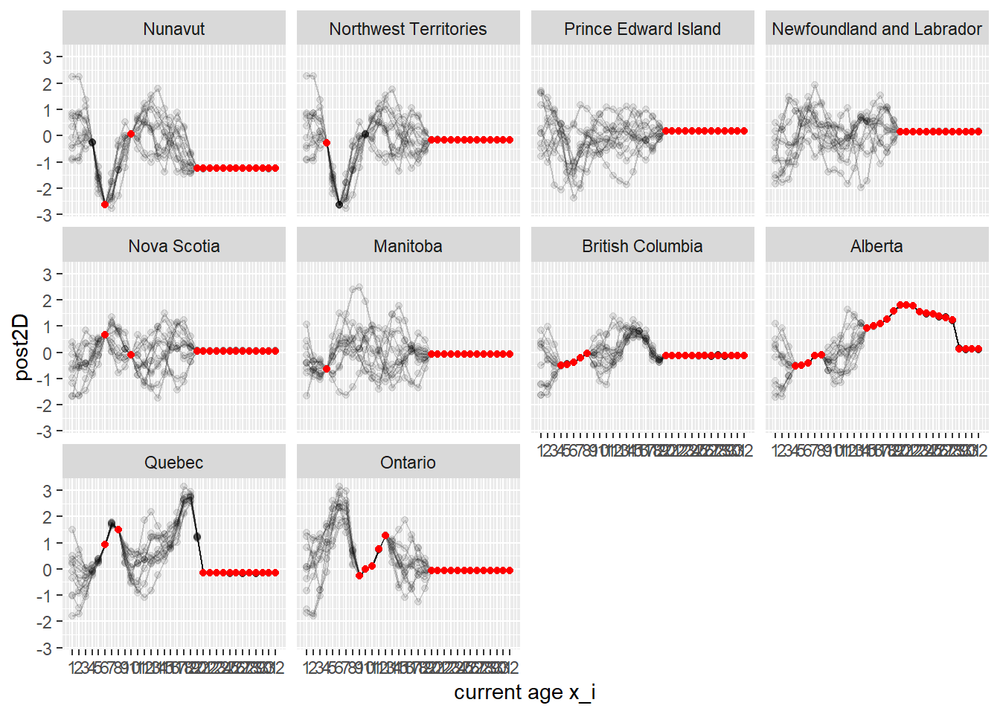
post2D %>% ggplot() + geom_point(aes(x=x_i, y=post2D_constrained, group=factor(draw)), alpha=0.1) +
geom_line(aes(x=x_i, y=post2D_constrained, group=factor(draw)), alpha=0.2) +
geom_point(data=tibble(x=xobs, y=zobs, y_label=yobs_factors), aes(x=x, y=y), col="red") +
scale_x_continuous(breaks=xvals, name="current age x_i") + scale_y_continuous(limits=c(0,1)) +
facet_wrap(~ y_label)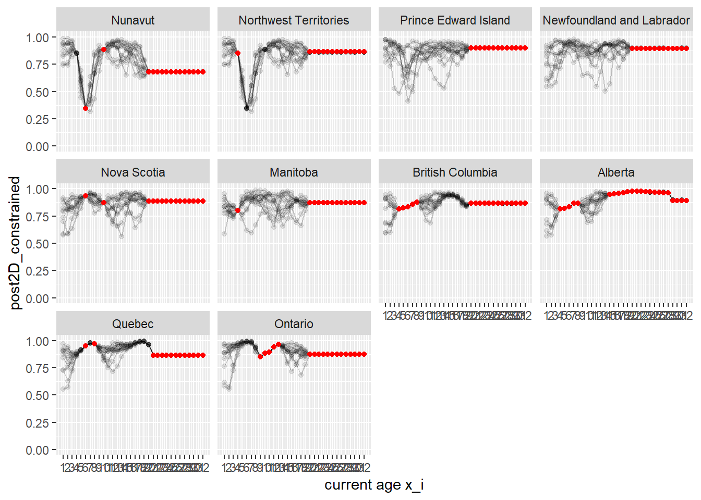
As before, we can compare performance by adding back in data points that the model has not seen in green (including for example 2-dose data):
post2D %>% ggplot() + geom_point(aes(x=x_i, y=post2D_constrained, group=factor(draw)), alpha=0.1) +
geom_line(aes(x=x_i, y=post2D_constrained, group=factor(draw)), alpha=0.2) +
geom_point(data=tibble(x=(vax_clean %>% filter(age_current<=last_agecurrent) %>% pull(age_current)), # adding in full data from vax_clean
y=(vax_clean %>% filter(age_current<=last_agecurrent) %>% pull(value)),
y_label=factor((vax_clean %>% filter(age_current<=last_agecurrent) %>% pull(location)), levels=prov_levels)),
aes(x=x,y=y), col="green") +
geom_point(data=tibble(x=xobs, y=zobs, y_label=yobs_factors), aes(x=x, y=y), col="red") +
scale_x_continuous(breaks=xvals, name="current age x_i") + scale_y_continuous(limits=c(0,1)) +
facet_wrap(~ y_label)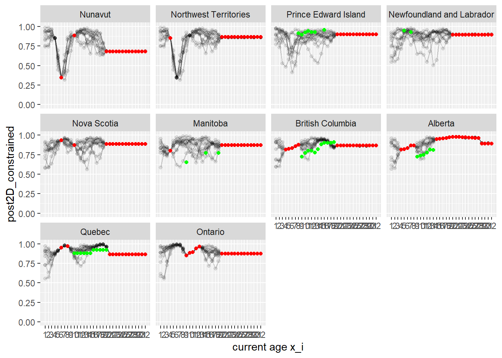
#ggsave(paste0("plots/post2D_l1",l1,"_l2",l2,"_ksqexp","_alldata",".pdf"), height=4.51, width=7.29)2D case model fitting
We now wish to improve our basic model by adding information to the prior and experimenting with choice of covariance function and related parameters. First, define helper functions to enable easy running of the 2D model (saved in “R/”):
compute_prior2D()plot_prior2D()compute_posterior2D()plot_posterior2D()run_GP().
The full 2D Gaussian Process model can then be run with run_GP(vax_dataset).
#' Run the full 2D Gaussian Process model
#'
#' First input `vax_dataset` must be specified. All other inputs are optional.
#' Note: x and y are independent variables, with dependent variable z. x is assumed to represent
#' current age, y province, and z vaccine coverage.
#' @param vax_dataset data set of observed vaccine coverage data in our standardised format (tibble)
#' @param first_agecurrent first age for the GP model, i.e. smallest x-variable entry (numeric)
#' @param last_agecurrent last age for the GP model, i.e. largest x-variable entry (numeric)
#' @param yvals numeric vector defining possible range of y-values (numeric) **do not scale
#' @param k covariance function chosen from the following list: (function) **Functionality not added yet for matern.
#' - ksqexp,
#' - kexp,
#' - kmatern.
#' @param k_name as above, but written as a character string (character)
#' @param l1 x-lengthscale parameter, for use with covariance functions ksqexp and kexp
#' @param l2 relative lengthscale of x values to y values, for use with covariance functions ksqexp and kexp
#' @param ndrws specify number of draws to be taken from the prior and posterior distributions
#' @param b optional scale for covariance function determining the output variance
run_GP <- function(vax_dataset, first_agecurrent=1, last_agecurrent=32, yvals=NA, k=NA, k_name=NA, l1=NA, l2=NA, ndrws=50, b=0.75) {
#' define possible x values
xvals <- first_agecurrent:last_agecurrent # a vector of current ages
#' define possible y values
province_relation <- readr::read_csv(here::here("data", "3610040201-noSymbol.csv"), show_col_types = F) %>%
filter(location %in% unique(vax_clean$location)) # province GDP data from StatCan
prov_levels <- (province_relation %>% pull(location)) # useful shortcut for defining province factors
if (is.na(yvals)) yvals <- log(province_relation %>% pull(Dollars)) # a vector of provinces -- currently log(GDP)
names(yvals) <- prov_levels
#' define covariance and related parameters
if (is.na(k)) k <- ksqexp
if (is.na(k_name)) k_name <- "ksqexp" # for plot titles
if (is.na(l1)) l1 <- 1.5 # x lengthscale
if (is.na(l2)) l2 <- 3 # relative lengthscale of x values to y values
yvals <- yvals*l2 # scale y values to the x lengthscale
#' compute and plot prior
prior2D <- compute_prior2D(xvals=xvals, yvals=yvals, k=k, l1=l1, ndrws=ndrws, prov_levels=prov_levels, b=b)
prior2D %>% plot_prior2D(., k=k_name, k_param1=l1, k_param2=l2) %>% print()
#' observe data (we may wish to use cNICS here instead of vax_clean)
xobs <- vax_dataset %>% filter((age_current<=last_agecurrent) & n_doses!="2") %>% pull(age_current)
yobs <- yvals[vax_dataset %>% filter((age_current<=last_agecurrent) & n_doses!="2") %>% pull(location)] # this includes scaling by l2
zobs <- vax_dataset %>% filter((age_current<=last_agecurrent) & n_doses!="2") %>% pull(value)
logit_zobs_centred <- logit(zobs) - mean(logit(zobs)) # apply logistic transform and centre the data around mean 0
tibble(xobs, yobs, zobs, logit_zobs_centred) %>% print()
#' compute and plot posterior
post2D <- compute_posterior2D(xvals=xvals, yvals=yvals, xobs=xobs, yobs=yobs, zobs=zobs,
k=k, l1=l1, ndrws=ndrws, prov_levels=prov_levels, b=b)
post2D %>% plot_posterior2D(., xobs=xobs, yobs=yobs, zobs=zobs, k=k_name, k_param1=l1, k_param2=l2) %>% print()
#' compare performance
#post_error <- post2D %>% group_by(x_i, y_i, y_label) %>% mutate(mean=mean(post2D_constrained))
return(list(prior2D, post2D))
}
run_GP(vax_clean)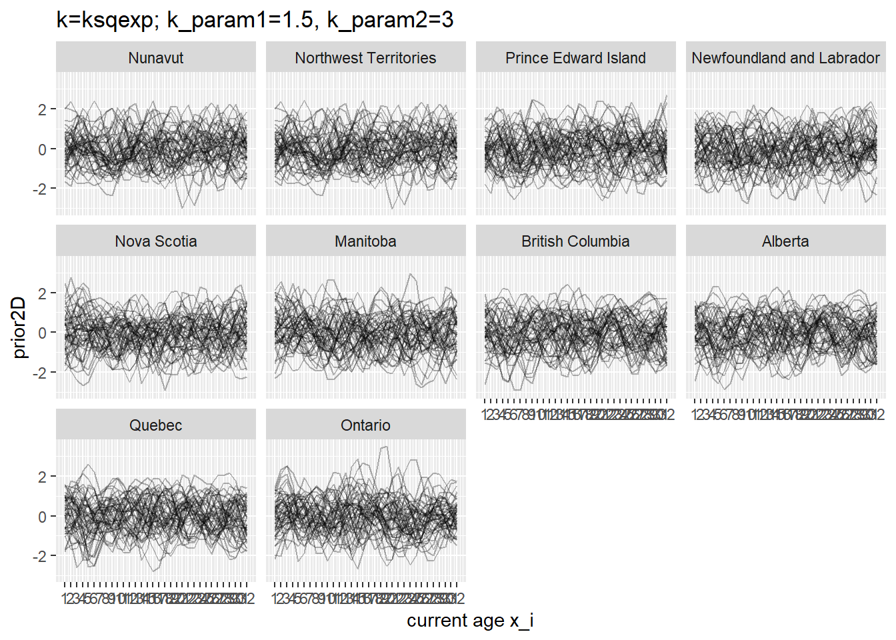
# A tibble: 157 × 4
xobs yobs zobs logit_zobs_centred
<dbl> <dbl> <dbl> <dbl>
1 4 38.3 0.817 -0.509
2 5 38.3 0.821 -0.482
3 6 38.3 0.832 -0.404
4 7 38.3 0.866 -0.133
5 8 38.3 0.870 -0.106
6 15 38.3 0.950 0.930
7 16 38.3 0.952 0.995
8 17 38.3 0.956 1.08
9 18 38.3 0.963 1.26
10 19 38.3 0.973 1.57
# ℹ 147 more rows
[[1]]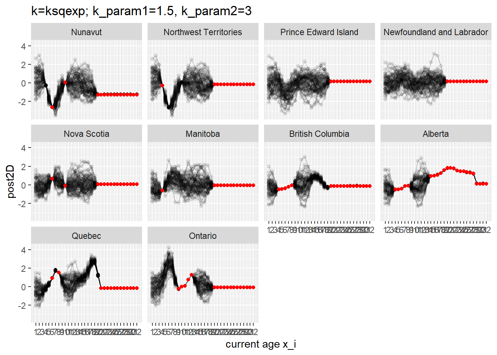
[[2]]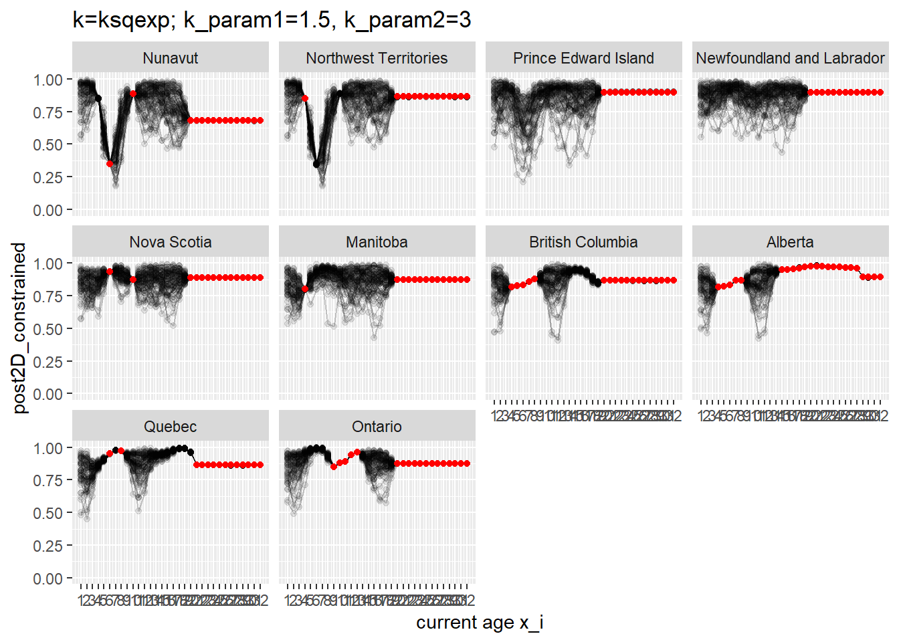
[[1]]
# A tibble: 16,000 × 5
draw x_i y_i prior2D y_label
<int> <int> <dbl> <dbl> <fct>
1 1 1 25.0 2.08 Nunavut
2 1 1 25.0 2.07 Northwest Territories
3 1 1 26.8 0.0541 Prince Edward Island
4 1 1 30.9 -0.721 Newfoundland and Labrador
5 1 1 32.2 -0.637 Nova Scotia
6 1 1 33.5 0.204 Manitoba
7 1 1 38.0 0.721 British Columbia
8 1 1 38.3 0.857 Alberta
9 1 1 39.0 0.869 Quebec
10 1 1 41.1 -0.335 Ontario
# ℹ 15,990 more rows
[[2]]
# A tibble: 16,000 × 6
draw x_i y_i y_label post2D post2D_constrained
<int> <int> <dbl> <fct> <dbl> <dbl>
1 1 1 25.0 Nunavut -0.952 0.741
2 1 1 25.0 Northwest Territories -0.952 0.741
3 1 1 26.8 Prince Edward Island -0.372 0.836
4 1 1 30.9 Newfoundland and Labrador -1.36 0.655
5 1 1 32.2 Nova Scotia 0.0267 0.884
6 1 1 33.5 Manitoba 0.616 0.932
7 1 1 38.0 British Columbia -0.939 0.744
8 1 1 38.3 Alberta -1.46 0.633
9 1 1 39.0 Quebec -1.99 0.503
10 1 1 41.1 Ontario 0.281 0.908
# ℹ 15,990 more rows